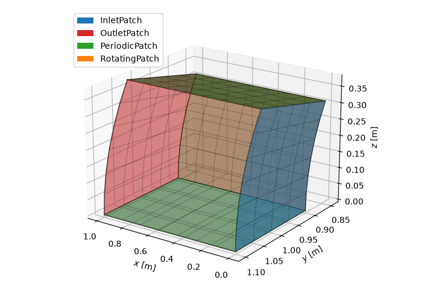

Note
Go to the end to download the full example code.
Boundary patches on a block¶
Boundary conditions in ember are applied through patches: labelled regions on
the faces of a ember.block.Block that carry inlet, outlet, periodic or
rotating-wall data. This example builds an annular duct block, attaches a patch
to each face, configures the boundary data, and draws the block with its patches
coloured by type.
Patches index a constant-\(i\), \(j\) or \(k\) face of the block, so the parent block must already have its coordinates set before a patch is attached – the patch needs the geometry to identify the span and pitch directions of the surface of revolution.
import numpy as np
import matplotlib.pyplot as plt
from matplotlib.patches import Patch as LegendPatch
import ember.block
import ember.fluid
import ember.patch
from ember import util
Annular duct geometry¶
A block spanning a short axial length of an annulus: i runs axially,
j radially across the span, and k circumferentially across one pitch.
The coordinates are set first so that patches can attach to it.
block = ember.block.Block(shape=(8, 5, 7))
# The inlet and outlet are characteristic conditions and attach only to a whole
# blade passage, so the circumferential extent is exactly one pitch of the
# blade count set on the block.
Nb = 18
block.set_xrt(
util.linmesh3((0.0, 1.0), (0.9, 1.1), (0.0, 2.0 * np.pi / Nb), block.shape)
)
block.set_Nb(Nb)
block.set_fluid(ember.fluid.PerfectFluid(cp=1005.0, gamma=1.4, mu=1.8e-5, Pr=0.7))
Creating and attaching patches¶
Each patch names the constant face it occupies (i=0 is the first axial
plane, i=-1 the last) and an optional label. Omitting the other two
indices spans the whole face. Patches live in the block’s patches
collection and can be added one at a time or in bulk.
block.patches.append(ember.patch.InletPatch(i=0, label="inflow"))
block.patches.append(ember.patch.OutletPatch(i=-1, label="outflow"))
block.patches.extend(
[
ember.patch.PeriodicPatch(k=0, label="lower"),
ember.patch.PeriodicPatch(k=-1, label="upper"),
]
)
block.patches.append(ember.patch.RotatingPatch(j=0, label="hub"))
# Patches are retrievable by index, by label, or by type.
print(f"{len(block.patches)} patches attached")
print("by label:", block.patches["inflow"])
print(
"by type: ",
len(block.patches.inlet),
"inlet,",
len(block.patches.periodic),
"periodic",
)
# Once attached, the constant dimension, shape and point count are known.
for patch in block.patches:
print(
f" {patch.label:>8}: {type(patch).__name__:14} "
f"const_dim={patch.const_dim} shape={patch.shape} size={patch.size}"
)
5 patches attached
by label: InletPatch(i=(0, 0), j=(0, -1), k=(0, -1), label='inflow')
by type: 1 inlet, 2 periodic
inflow: InletPatch const_dim=0 shape=(1, 5, 7) size=35
outflow: OutletPatch const_dim=0 shape=(1, 5, 7) size=35
lower: PeriodicPatch const_dim=2 shape=(8, 5, 1) size=40
upper: PeriodicPatch const_dim=2 shape=(8, 5, 1) size=40
hub: RotatingPatch const_dim=1 shape=(8, 1, 7) size=56
Configuring boundary data¶
Inlet patches take a stagnation state and the two flow angles; outlet patches take a static pressure. Rotating patches take an angular velocity.
Each of these is imposed on the pitchwise mean at every span station, never node by node, so the values are a scalar or a spanwise profile. A pitchwise-varying value is refused rather than quietly averaged.
inlet = block.patches["inflow"]
inlet.set_Po_To(2e5, 1200.0)
inlet.set_Alpha(0.0)
inlet.set_Beta(0.0)
# A radial stagnation-temperature profile across the span (j direction).
_, nj, _ = inlet.shape
To_profile = np.linspace(1100.0, 1300.0, nj).reshape(1, nj, 1)
inlet.set_Po_To(2e5, To_profile)
print(f"Inlet To varies {To_profile.min():.0f}--{To_profile.max():.0f} K")
outlet = block.patches["outflow"]
outlet.set_P(1e5) # Static pressure [Pa], imposed on the pitchwise mean
hub = block.patches["hub"]
hub.set_Omega(500.0) # rad/s
print(f"Hub speed: {hub.rpm:.0f} rpm")
Inlet To varies 1100--1300 K
Hub speed: 4775 rpm
Extracting data on a patch¶
Every patch exposes a slice that indexes its face out of the parent block,
either as a 2-D sub-block (with all properties available) or applied directly
to a property array.
inlet_face = block[inlet.slice] # 2-D sub-block on the inlet face
print(f"Inlet face block shape: {inlet_face.shape}")
print(
f"Same coordinates direct from the array: "
f"{np.array_equal(inlet_face.x, block.x[inlet.slice])}"
)
Inlet face block shape: (1, 5, 7)
Same coordinates direct from the array: True
Visualising the patched block¶
Drawing each patch on its face shows how the boundaries tile the block. A light wireframe of the whole block places each patch extent within the full domain – including the casing face, which carries no patch here. Cartesian coordinates follow from \(y = r\cos\theta\), \(z = r\sin\theta\); each patch face is one singleton-dimension slice.
colours = {
"InletPatch": "C0",
"OutletPatch": "C3",
"PeriodicPatch": "C2",
"RotatingPatch": "C1",
}
def to_xyz(b):
"""Cartesian coordinates of a block, with any singleton axes removed."""
x, r, t = np.asarray(b.x), np.asarray(b.r), np.asarray(b.t)
return x.squeeze(), (r * np.cos(t)).squeeze(), (r * np.sin(t)).squeeze()
def block_edges(b):
"""The twelve edges of a block, as sub-blocks tracing the actual nodes."""
ends = (0, -1)
edges = [b[:, j, k] for j in ends for k in ends] # along i
edges += [b[i, :, k] for i in ends for k in ends] # along j
edges += [b[i, j, :] for i in ends for j in ends] # along k
return edges
fig = plt.figure(figsize=(7, 5))
ax = fig.add_subplot(111, projection="3d")
# Wireframe of the whole block (curved circumferential edges traced), drawn
# heavier than the patch faces are translucent so the full extent reads through.
for edge in block_edges(block):
ax.plot(*to_xyz(edge), color="0.3", lw=1.2)
for patch in block.patches:
X, Y, Z = to_xyz(block[patch.slice])
ax.plot_surface(
X,
Y,
Z,
color=colours[type(patch).__name__],
alpha=0.55,
edgecolor="k",
linewidth=0.2,
)
ax.set_xlabel("$x$ [m]")
ax.set_ylabel("$y$ [m]")
ax.set_zlabel("$z$ [m]")
ax.view_init(elev=20, azim=125)
legend = {type(p).__name__: p for p in block.patches} # one entry per type
ax.legend(
handles=[LegendPatch(facecolor=colours[name], label=name) for name in legend],
loc="upper left",
)
fig.tight_layout()
plt.show()

Total running time of the script: (0 minutes 0.152 seconds)